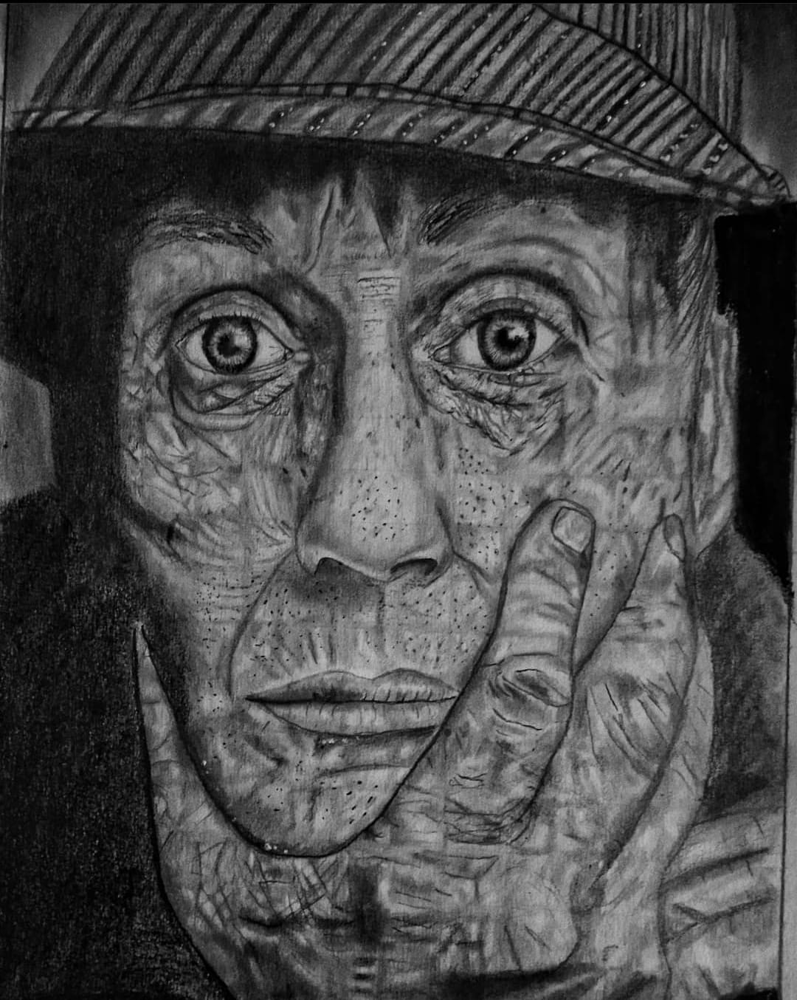
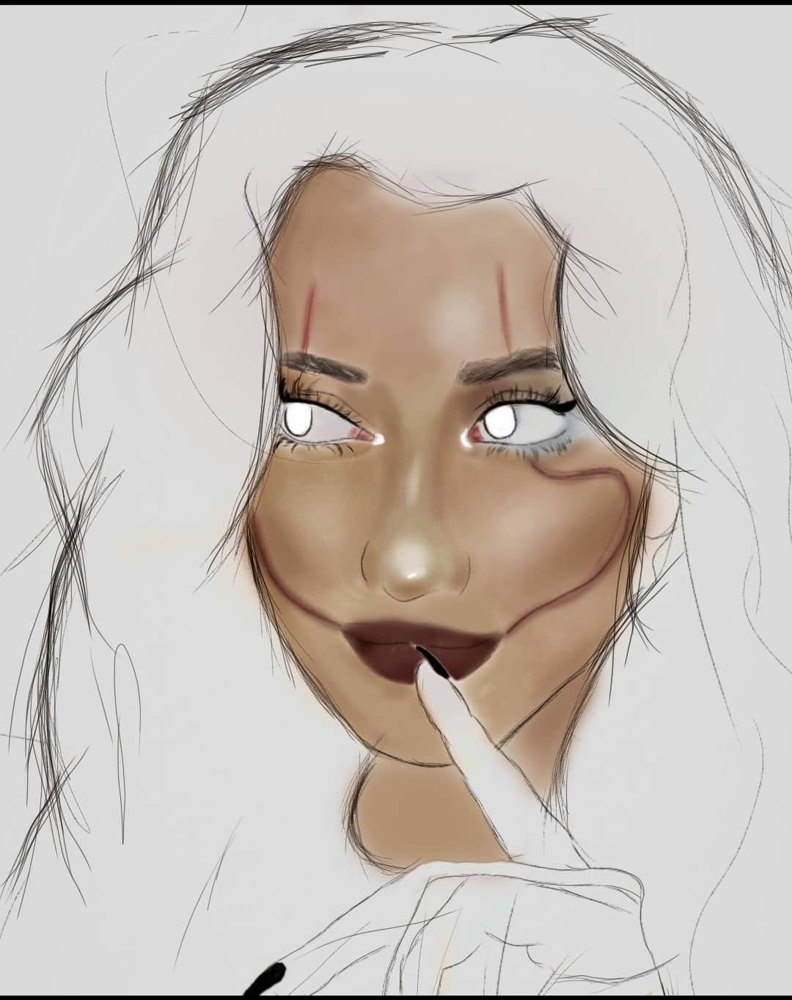
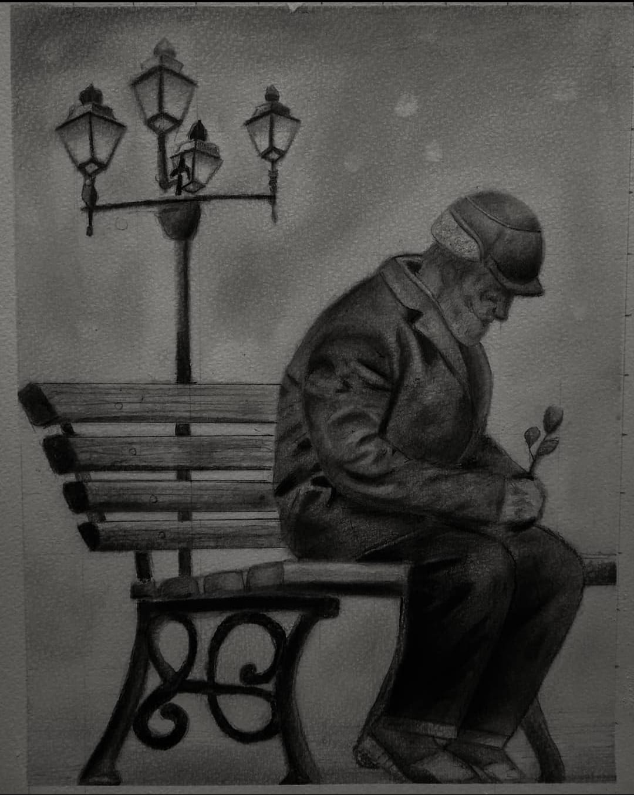
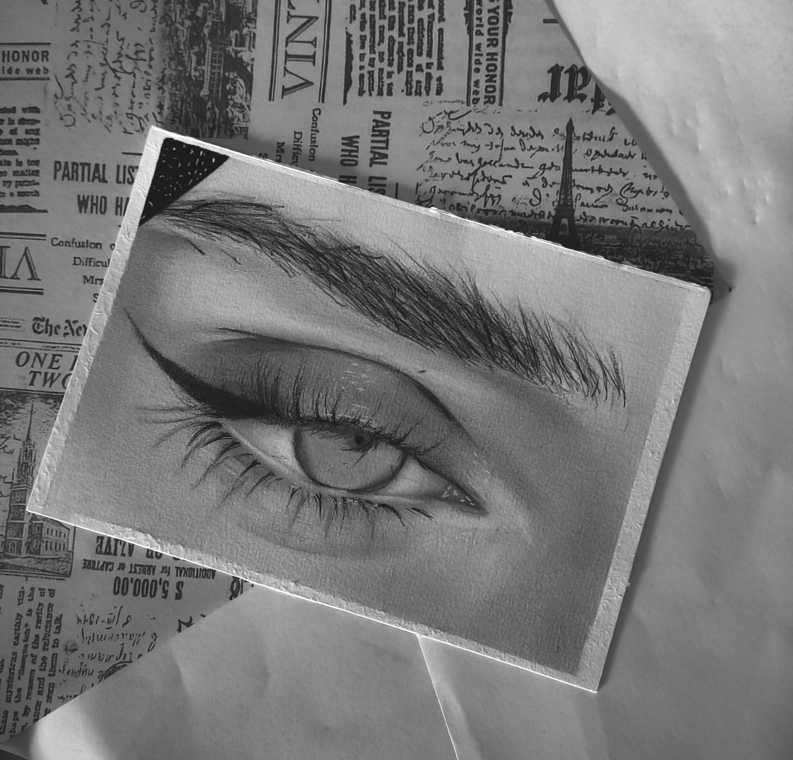
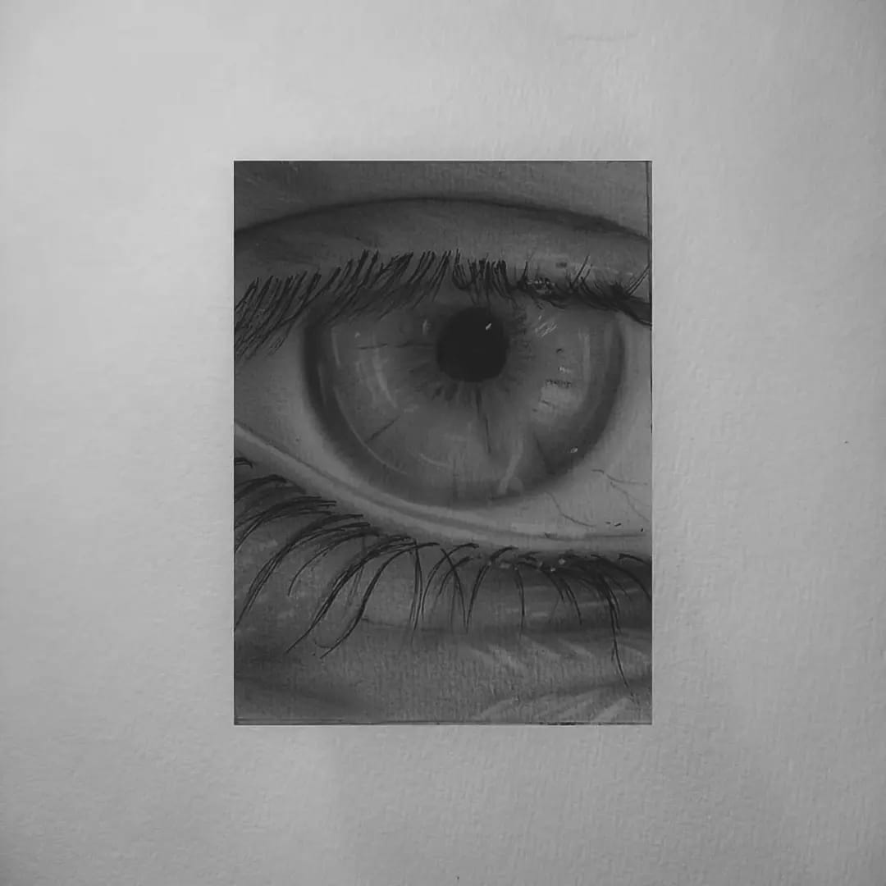
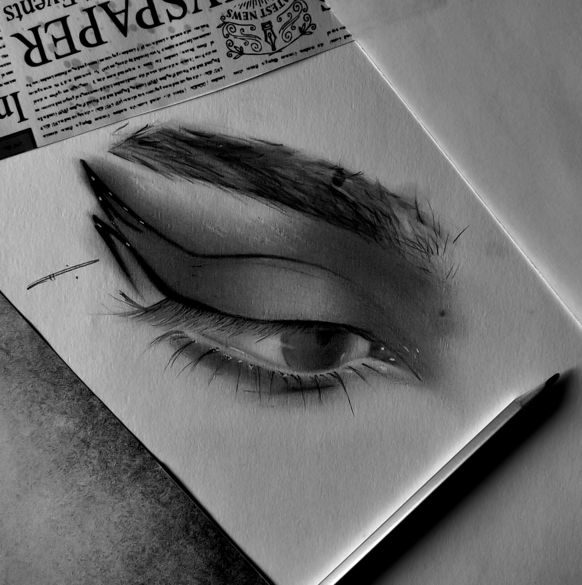
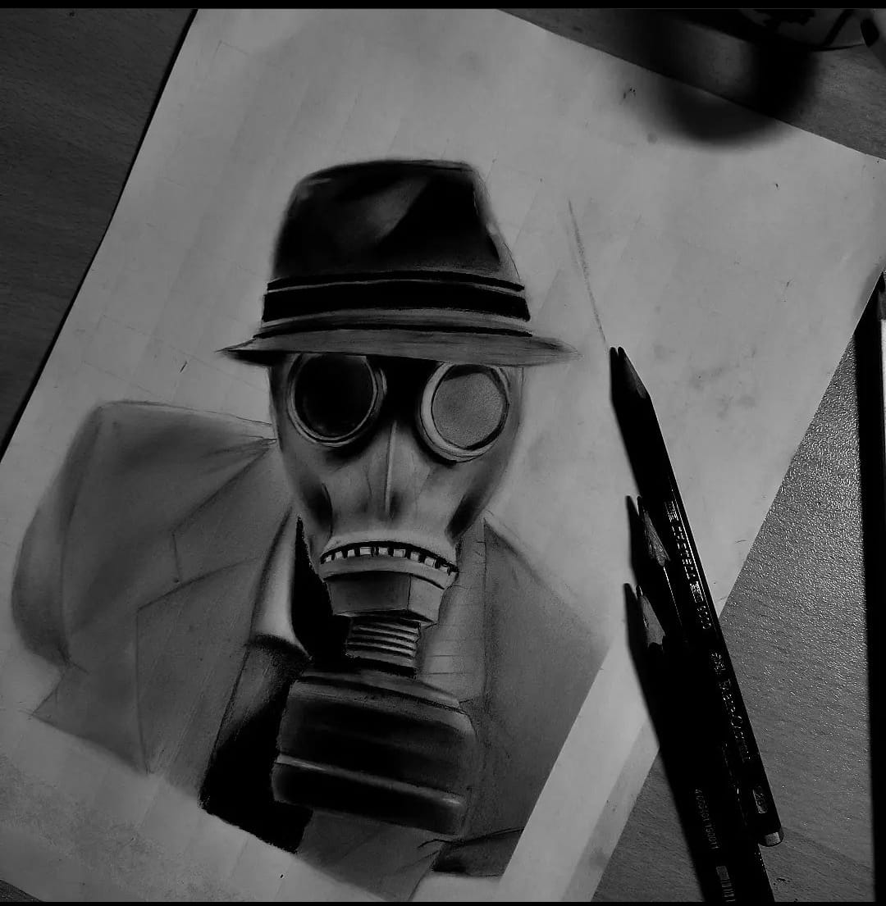
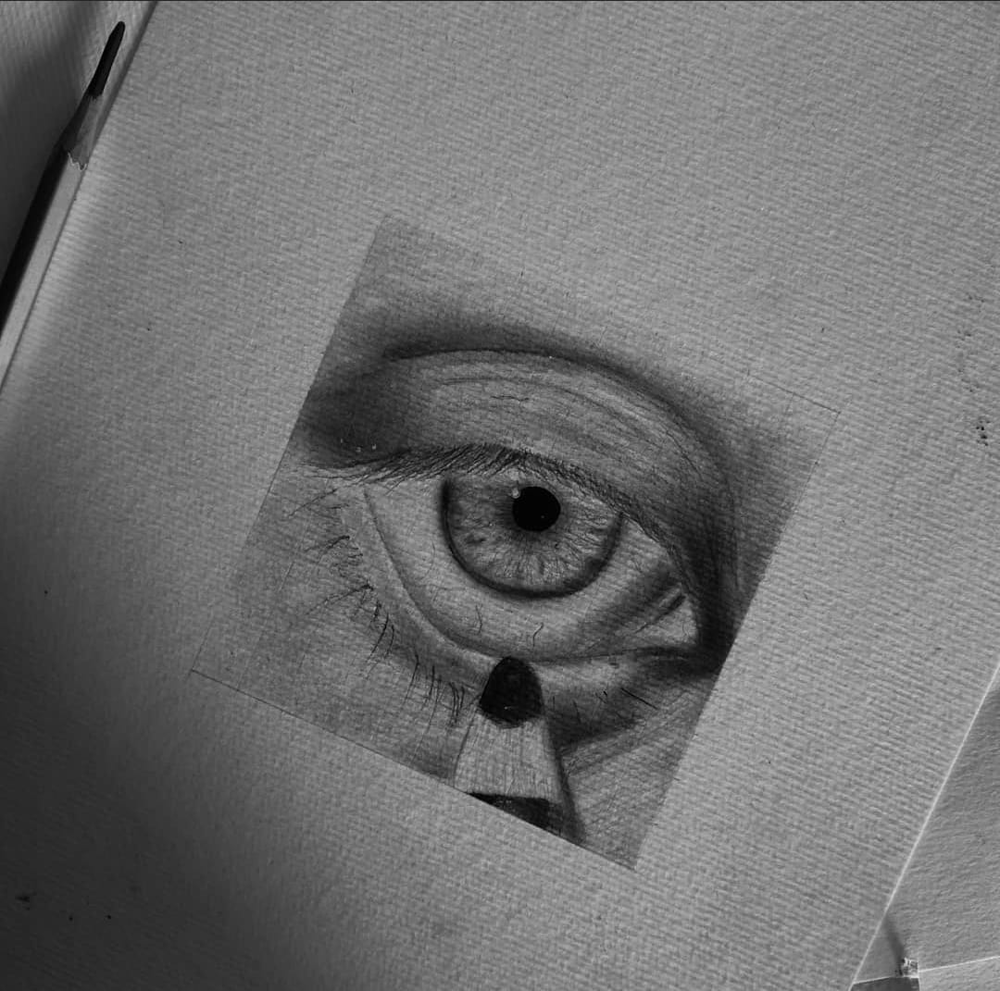

Hazem and drawing
I love drawing, and the relationship that my feelings have with pens, frankly, I prefer drawing eyes and free scenes, I am free with them!
I can remember my first drawing in 2017, I remember how happy I was then, and now I am happy with every new drawing I draw.
Feeling that you are capable of containing a talent, is a beautiful thing.







